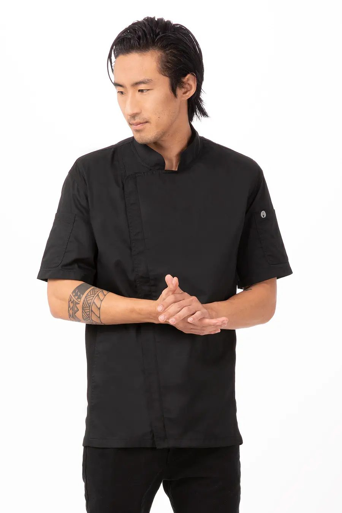
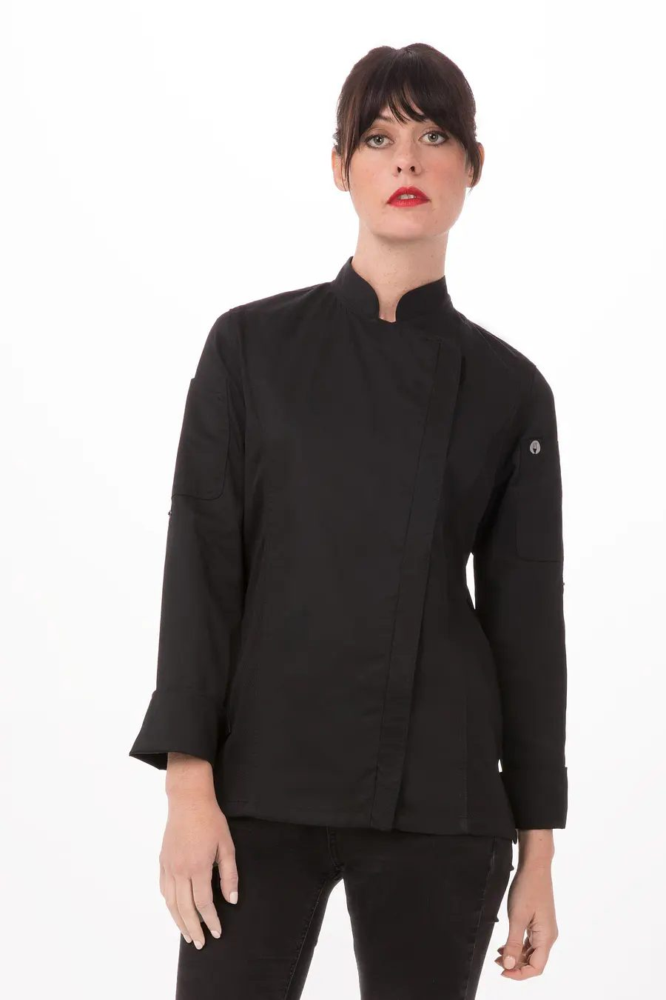
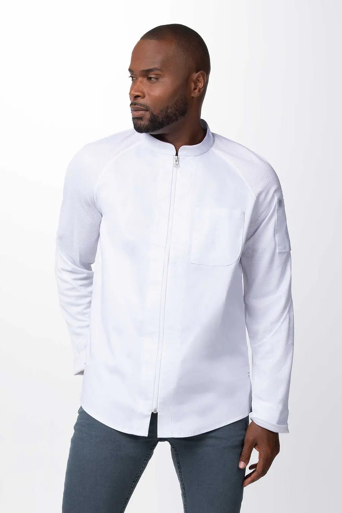

Colección vigente
CatálogoUniformes de cocina y servicio
- Chaquetas clásicas, modernas y casual
- Poleras
- Pantalones unisex y mujer
- Pecheras y mandiles
- Gorros y calzado
- Horeca camisas, blusas y chalecos
- Kit estudiantes


